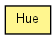

toxi.color
Class Hue
java.lang.Object
 toxi.color.Hue
toxi.color.Hue
public class Hue
- extends java.lang.Object

This class defines color hues and allows them to be access by name. There are
also methods to check if a hue is one of the 7 primary hues (rainbow) or to
find the closest defined hue for a given color.
|
Constructor Summary |
Hue(java.lang.String name,
float hue)
|
Hue(java.lang.String name,
float hue,
boolean isPrimary)
|
| Methods inherited from class java.lang.Object |
equals, getClass, hashCode, notify, notifyAll, wait, wait, wait |
RED
public static final Hue RED
ORANGE
public static final Hue ORANGE
YELLOW
public static final Hue YELLOW
LIME
public static final Hue LIME
GREEN
public static final Hue GREEN
TEAL
public static final Hue TEAL
CYAN
public static final Hue CYAN
AZURE
public static final Hue AZURE
BLUE
public static final Hue BLUE
INDIGO
public static final Hue INDIGO
PURPLE
public static final Hue PURPLE
PINK
public static final Hue PINK
PRIMARY_VARIANCE
public static float PRIMARY_VARIANCE
- Tolerance value for checking if a given hue is primary (default 0.01)
Hue
public Hue(java.lang.String name,
float hue)
Hue
public Hue(java.lang.String name,
float hue,
boolean isPrimary)
getClosest
public static final Hue getClosest(float hue,
boolean primaryOnly)
- Finds the closest defined & named Hue for the given hue value.
Optionally, the search can be limited to primary hues only.
- Parameters:
hue - normalized hue (0.0 ... 1.0) will be automatically wrappedprimaryOnly - only consider the 7 primary hues
- Returns:
- closest Hue instance
getForName
public static final Hue getForName(java.lang.String name)
isPrimary
public static boolean isPrimary(float hue)
isPrimary
public static boolean isPrimary(float hue,
float variance)
getHue
public float getHue()
getName
public java.lang.String getName()
isPrimary
public boolean isPrimary()
toString
public java.lang.String toString()
- Overrides:
toString in class java.lang.Object